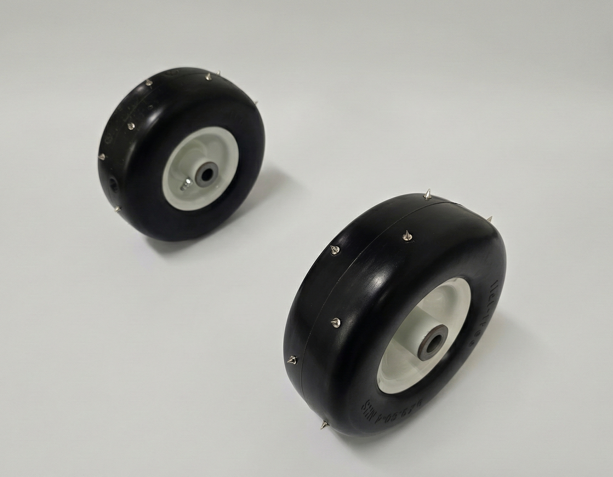

Design Solution Stage
Team Wheelders
Rice Robotics Club | University Rover Challenge

Key Functions & Features
Our design must satisfy the following core functional blocks:
- Traction Interface: Must grip soft sand and rock surfaces (Grousers/Tread).
- Structural Support: Support 50kg rover load without deformation (Core/Spokes).
- Mounting Interface: Securely attach to rocker-bogie suspension (Hub).
Brainstorming & Design Selection Process
Process Overview
Our team utilized a structured brainstorming approach over two rounds. Round 1 focused on generating a high volume of diverse ideas using the "slip method," resulting in 87 total ideas. Round 2 targeted specific gaps identified in the first round, specifically manufacturing methods and material selection.

Figure 2: Engineering Decision Making Flowchart
Categorized Ideas
We categorized our 80+ unique ideas into five main groups: Feature Design, Alternative Concepts, Movement Modes, Materials, and Manufacturing.

Wheel Features (35 Ideas)
Spoke designs, grouser shapes, and rim geometries.
Alternative Concepts (21 Ideas)
Tank treads, walker legs, and non-circular mobility.
Materials (21 Ideas)
Carbon fiber, aluminum, rubber, and hybrid composites.
Manufacturing
CNC machining, 3D printing, and casting techniques.Top 8 Design Ideas

Figure 3: Top 8 Design Concepts Sketches
Sketch a
Metal skeleton wheel with metal spikes and a rubber outside
Sketch b
Laser cut rubber wheel
Sketch c
Metal star shaped wheel with flattened rubber ends
Sketch d
Polycarbonate resin printed wheel
Sketch e
3D printed rubber wheel with tire treads
Sketch f
Rubber wheel with metal spikes
Sketch g
Circular inner part wheel with ridged rubber grousers on outside
Sketch h
Resin printed rubber wheel
Design Selection
We narrowed down our top ideas using a Pugh Scoring Matrix. We evaluated 8 distinct concepts against our weighted Design Criteria (Traction, Durability, Replicability, Replaceability, Weight, Size, Coolness).
| Design Criteria | Weight | a. Metal skeleton wheel with metal spikes and rubber outside | b. Laser cut rubber wheel | c. Metal star shaped wheel with flattened rubber ends | d. Polycarbonate resin printed wheel | e. 3D printed rubber wheel with tire treads | f. Rubber wheel with metal spikes | g. Circular inner part wheel with ridged rubber grousers on outside | h. Resin printed rubber wheel |
|---|---|---|---|---|---|---|---|---|---|
| Traction | 25% | 5 | 2 | 4 | 2 | 3 | 5 | 4 | 2 |
| Durability | 25% | 3 | 4 | 3 | 4 | 4 | 3 | 3 | 4 |
| Replicability | 20% | 2 | 4 | 3 | 4 | 4 | 3 | 3 | 4 |
| Replaceability | 15% | 4 | 5 | 3 | 5 | 5 | 5 | 5 | 5 |
| Weight | 5% | 3 | 4 | 4 | 4 | 5 | 3 | 3 | 4 |
| Size | 5% | 4 | 3 | 4 | 3 | 2 | 5 | 4 | 3 |
| Cool | 5% | 4 | 2 | 5 | 2 | 3 | 3 | 3 | 2 |
| Weighted Total Score | 100% | 3.55 | 3.5 | 3.45 | 3.5 | 3.8 | 3.9 | 3.6 | 3.5 |
| Rank | 4 | 5 | 6 | 5 | 2 | 1 | 3 | 5 | |
This hybrid design emerged as the clear champion through its optimal balance of critical performance factors that directly address the URC Delivery Mission requirements. Why This Design Excels:
- Superior Traction (25% weight): Perfect 5/5 rating for handling the 30° slopes and loose terrain that characterize Mars-like conditions
- Quick Replaceability (15% weight): Top 5/5 score enables field repairs in under 1 minute, crucial during competition
- Size Optimization (5% weight): Perfect 5/5 fit for the 9.5-inch requirement while maintaining maneuverability
- Balanced Performance: Strong scores across durability (3/5), replicability (3/5), and weight (3/5) ensure reliability without excessive complexity
This all-rubber design also performed exceptionally well, offering excellent traction and manufacturing advantages. Why This Design Performed Strongly:
- Outstanding Weight Performance (5% weight): Perfect 5/5 score for minimal weight impact on the 50kg rover
- High Traction (25% weight): Strong 3/5 rating for challenging terrain with tire tread patterns
- Excellent Replicability (20% weight): Top 4/5 score due to simple 3D printing construction
- Good Replaceability (15% weight): Strong 5/5 rating for easy field replacement
Selected Design Solution
Initial Solutions Sketches
Primary Design: Rubber Wheel with Metal Spikes

Figure 4: Primary design annotated sketch
Secondary Design: 3D Printed Rubber Wheel with Tire Treads

Figure 5: Secondary design annotated sketch
Our initial 3D-printed TPU prototype lacked the necessary refinement, as while the material demonstrated promising traction properties, the printing process yielded unsatisfactory results. Due to our dissatisfaction with the TPU wheel's performance, we chose to concentrate exclusively on the metal-spiked wheel design. This decision was made after investing considerable time and resources into the TPU prototype, which proved to be unsuccessful. Further details regarding this prototyping process will be elaborated upon in the Prototyping Iterations page.
Final Refined Prototype
Figure 6: Final refined prototype
Operation Video
Primary Design Demonstration
[VIDEO PLACEHOLDER]
Demonstration of the wheel traversing sand and climbing obstacles.
The video demonstrates the wheel's ability to deform slightly over obstacles (dampening impact) while the metal spikes engage with the loose terrain to provide forward thrust.
Testing Table
| Design Criteria and Target Value | Category of Test | How will the measurement be made? | How many times will the test be repeated? |
|---|---|---|---|
| Traction - Be able to scale a 6-20 degree sandy hill | Constructed - Surrogate | Put the rover wheel on an inclined plane covered by sand to simulate sandy terrain. Adjust the plane between 6-20 degrees and see if the static friction forces can hold the wheel on the inclined plane. | 5 times |
| Durability - withstand a continued load of 60kg for a hour | Constructed - Direct | Drop the wheels from various heights (Impact Testing from 10 to 50 inches increments of 10 inches) | 3 times per height |
| Replicability - can construct a set of wheels within a week | Standard - Surrogate | Time it takes to 3D print a set of 4 wheels | 1 time |
| Replaceability - takes less than a minute to change 1 wheel out | Standard - Surrogate | Measure the time taken (Using a stopwatch) to replace the wheel. | Conduct 20 runs. |
| Weight - target .8kg | Standard - Direct | Use a scale to find the weight of each individual wheel. | 3 times |
| Size - 125mm | Standard - Direct | Use a calliper to measure the diameter and width of each individual wheel. | 3 times |
| Coolness - design stands out | Constructed - Surrogate | User-defined scale, done by some of the rice robotic students and some by random people. | The goal is 25 people. |
Testing & Validation
To evaluate whether our rover wheel design met the performance goals established in our EDP test plan, we conducted a structured series of tests aligned with our seven design criteria: traction, durability, replicability, weight, size, replaceability, and coolness. Each test was defined in the EDP, along with its corresponding methods, pass or fail thresholds, and required materials. Our testing results and raw data are referenced in Appendix E. The testing included both intermediate prototype testing (Iteration 4) and final prototype evaluations (Iterations 5 and 6), allowing us to assess how design changes impacted performance.
Testing Methodology
To assess traction, we conducted a standard incline test on a sand-covered wooden board intended to simulate the competition conditions in Utah. We made a makeshift axle to attach two wheels to and placed it on the incline. We increased the incline gradually to achieve angles from 6-20 degrees and the wheel assembly passed at a given angle if it remained static. Using the wheel system's weight of 3.4kg we calculated the frictional force at each angle using F = μWsin(θ). The coefficient of friction was from the contact of rubber to sand.

Figure 7: Traction test setup on sand-covered incline
Durability was evaluated using a drop test in which each prototype was dropped from 10, 20, 30, 40, and 50 inches onto hard gravel. The wheel failed if spikes detached or had significant blunting. Replicability was tested by timing the manufacturing process to make a copy of the wheel from start to finish. Weight and Size were measured using standard instrumentation and were compared to the dimensional constraints from the beginning of the project. We did not end up carrying out any tests for replaceability as it needed to be tested on Rice Robotics' full-scale prototype which upon the time of writing this report has not been finished to the extent needed. Coolness was tested from peer feedback on the wheel design and responses were compared to our target and matched to a numerical value as per our UDS (Appendix H).
Intermediate Testing Results (Iteration 4)
Intermediate testing of iteration 4 demonstrated that the rubber rugby spike concept provided moderate traction but poor durability. Traction remained sufficient up to an incline of 15 degrees, where the wheel provided 3.91 N of frictional force compared to the 3.68 N required. At 16 degrees, however, slipping occurred as the required force exceeded the wheel's capability. Durability results were more concerning: rubber spikes visibly deformed at 30 inches and detached at 40 inches, failing our targets for durability. Weight (1.5 kg) and diameter (8.5 in) met the design constraints, but the shortcomings in spike resilience indicated the need for design changes. Based on these findings, documented in EDP 6b, we transitioned to metal track spikes and updated both the attachment method and use of adhesives to address the failures observed.
Final Testing Results (Iterations 5 & 6)
Final testing of iterations 5 and 6 showed substantial performance improvements. Both prototypes, which differed only in spike layout, were tested simultaneously on the same axle and each trial was repeated three times for consistency. In traction testing, both designs remained stable at all tested angles up to 20 degrees which exceeded our target by 5 degrees. Slipping occurred only beyond this threshold, at angles where the required force (5.09 N) exceeded the wheel's limit (4.82 N).

Chart 1: Friction Force of Test Wheels vs. Angle (Iteration 5, 6, and control)
Durability results further validated the design shift as both versions survived drops up to 50 inches with no spike detachment. Some spikes loosened and displayed minor wear with iteration 5 taking the most damage. This led us to choose the diagonal spike layout of iteration 6 as our final design as the metal spikes distributed impact forces more effectively and also had almost the exact same friction test results of iteration 5.
| Drop Height (in) | Wheel with Rugby Cleats | Wheel with metal spikes in linear layout | Wheel with metal spikes in diagonal layout |
|---|---|---|---|
| 10 | No damage | No damage | No damage |
| 20 | No damage | No damage | No damage |
| 30 | Light damage | No damage | No damage |
| 40 | Loss of 2 spikes | Light damage | No damage |
| 50 | Loss of 2 more spikes | Heavy spike blunting | Light damage |
Table 3: Durability Test Results (Drop Test)
Replicability testing showed that reproducing iteration 6 could be done in 6 minutes and 50 seconds with relative ease. The only required tools were a drill and glue. This ease met our target for our UDS (Appendix H) for this criteria. Weight and size remained consistent with our intermediate testing, confirming that durability and traction improvements did not come at the expense of increased mass. Our feedback on the coolness criteria of iteration 6 was mostly indifferent as most people saw the spikes as cool but nothing particularly captivating about the design.
Summary & Recommendations
Together, these results show that our final prototype (iteration 6) met or exceeded the traction and durability goals outlined in our design criteria, while also highlighting opportunities for refinement. Future iterations should focus on strengthening the spike attachment, potentially through mechanical fasteners or higher-strength adhesives. Additionally, strengthening the spikes themselves to reduce wear and blunting would be beneficial for wheel longevity. These recommendations arise directly from the data collected across all prototypes and provide a clear path forward for enhancing performance in conditions representative of the University Rover Challenge.
Project Hand-off & Conclusion
Throughout the design analysis stage, we gained a greater understanding of wheel design challenges and identified successful URC wheel patterns, such as pre-made rubber wheels with spike or tread exteriors. We developed design criteria to guide our brainstorming, generating over 60 potential solutions and selecting the most viable concept through Pugh scoring.
Our prototyping process involved multiple iterations that progressively improved quality, functionality, and adherence to design criteria through better materials and manufacturing methods. Initial prototypes focused on feature integration, while later iterations explored manufacturing techniques and incorporated purchased base wheels with modifications.
As a team, we hope our wheel design will contribute to Rice Robotics' success in their first University Rover Challenge appearance. We have now transitioned to project hand-off, with all relevant documents, prototypes, and testing data to be delivered to our client by December 31st, 2025. For further communication regarding this project, please contact Rice Robotics at riceroboticsclub@gmail.com or our main point of contact, Ryan Purdy (rpp6@rice.edu).